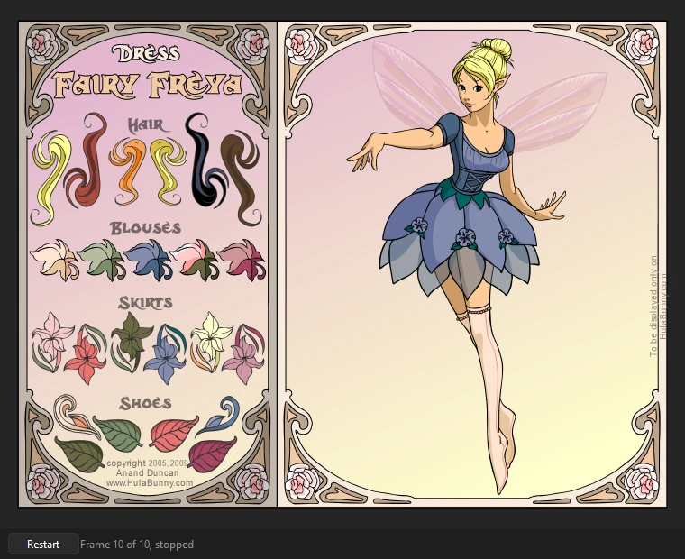

Animation
ActionScript and Test Movie
ActionScript is the scripting language of Flash movies and games: buttons that answer clicks, clips that follow the keys, scores kept in text fields. Phoenix writes it in the Actions panel and plays it in Test Movie, ActionScript 1 and 2 as older movies have it and ActionScript 3 frame scripts with their event listeners.
Where scripts go
A script belongs to one of two places:
- A keyframe
- It runs each time the playhead reaches that frame: on the main timeline, or inside a movie clip as the clip plays. Most scripts go here, and in ActionScript 3 all of them do. A layer named actions at the top of the timeline, with nothing else on it, keeps them easy to find.
- A button or movie clip instance
- ActionScript 1 and 2 only. A button's script holds handlers such as
on (release) { ... }, run when it is clicked; a movie clip's holdsonClipEvent (enterFrame) { ... }and the like.
Scripts reach movie clips, buttons and text fields by their instance names, set in the Properties panel: a clip named hat is hat to the script on its timeline. Library symbols are reached by their linkage, set in the library's symbol properties (exported for ActionScript, with an identifier or a class name).
The Actions panel
(F9) shows the script of the keyframe at the playhead on the current layer, ready to type into. Select a button or movie clip instance on the stage instead and it shows that instance's own script.
- What you type goes into the document as you type. Each script you work on is one step in the undo history until you move to another script or click away, so Ctrl+Z on the stage takes back the whole edit. Inside the editor, Ctrl+Z undoes typing.
- The script navigator on the left lists every script in the document, scene by scene and symbol by symbol. Click one to edit it without moving the playhead. The ☰ button shows or hides it.
- Pin keeps the script in the panel while you select other things and move the playhead. Picking a script in the navigator pins it; click Pin again to follow the selection.
- Check checks the script's syntax. It is also checked each time it goes into the document: the line with an error is marked, and the line below the editor says what is wrong.
Writing code
- Code hints. Type a dot and what can follow it is offered: a clip's methods and properties,
MouseEvent.'s events,Key.'s keys. Ctrl+Space offers every word that fits what you have begun, the instance names on the timeline among them. Arrow to one and press Enter or Tab; Esc closes them. - Snippets puts in ready-made code for what movies often do: stop at a frame, go to a frame on a click, show or hide, drag and drop, move with the arrow keys, count clicks in a text field, play a library sound. Those for ActionScript 2 go in a button's or clip's script; those for ActionScript 3 in a frame's. A snippet that works on an instance asks which.
- Target (Insert Target Path) lists the named movie clips and buttons the script can reach, those inside them too, and types the path to the one you pick at the caret:
this.hat.bow, or from the root (_root.hat.bow) for a script on a scene's timeline. Only instances with a name are listed. - Find (Ctrl+F) finds, and Ctrl+H replaces. Ctrl+G goes to a line, and Ctrl+/ comments the selected lines out or back in.
- Tab and Shift+Tab indent and outdent the selected lines. A new line keeps the indent, one step deeper after an opening brace, and a closing brace steps back.
ActionScript files (.as) open in , the same editor in a window of its own; see Write a script.
Test Movie
(Ctrl+Enter) plays the movie in a window of its own as Flash Player would, at the document's frame rate, running its ActionScript. It starts at the first scene and plays the scenes in turn, back to the first after the last. Buttons light up under the mouse and answer clicks, and keys typed in the window go to the movie, so an interactive movie, such as a dress-up game, can be played.

- The first button, Restart, plays it again from the first frame.
- Pause holds it where it is (it then shows Play); Step moves the paused movie on one frame at a time.
- The time slider shows where the scene is; click or drag it to go to another frame, whose scripts run as a
gotoAndPlaywould run them. Beside it are the scene and frame, and whether the timeline has stopped. - Esc, or closing the window, goes back to editing. Playing never changes the document.
Buttons and movie clips are clicked by their art, so a click between two buttons finds neither. Click an input text field to type into it.
ActionScript 1 and 2
As older movies and games are written, they run as Flash Player runs them:
- Frame scripts run as their keyframes are reached, on the main timeline and in every movie clip, after the frame's objects are placed.
stop(),play(),gotoAndPlay(),gotoAndStop(),nextFrame()andprevFrame(), on the timeline or on a named clip (hat.gotoAndStop(3)), andtellTarget.nextScene()andprevScene(), and gotos that name a scene (gotoAndPlay("Ending", 1)) or a label in another scene.on (release),on (press),on (rollOver)and the other button events,on (keyPress "<Left>"), andonClipEvent (load),(enterFrame),(keyDown),(keyUp),(mouseDown),(mouseUp)and(mouseMove)on movie clips.- A clip's
_x,_y,_visible,_alpha,_xscale,_yscale,_rotation,_width,_height,_currentframe,_totalframes,_xmouseand_ymouse, read and set by dot (hat._visible = false) or withgetPropertyandsetProperty, and clips found by name or by path ("/hat",_root.hat,_parent). - The keyboard:
Key.isDown(Key.LEFT),Key.getCode(),Key.getAscii()andKey.addListener(). Selection.setFocus("name_txt")andgetFocus(), for input fields.- Variables,
if, loops, functions (constructor functions withnewtoo), arrays and objects,ifFrameLoaded(everything counts as loaded) andtrace(), whose output goes to the Output panel (F2).
ActionScript 3
An ActionScript 3 movie (as its publish settings say) plays with the flash.* classes, over the display list: everything on the stage is a display object scripts can find, move, filter, draw into and take apart, and every class can be made with new, extended, and tested with is and instanceof.
- The display list.
Sprite,Shape,MovieClip(its frames, labels and scenes:currentFrame,currentLabel,currentLabels,scenes,gotoAndStopwith a scene,addFrameScript),SimpleButton,Bitmap,TextField, and theStage(stageWidth,frameRate,focus,invalidate()and the rest). Children are added, removed, reordered and found by name; objects have their position, scale, rotation, alpha, filters, blend mode, mask, scroll rect,transform, bounds, and hit tests. What the timeline places is the same objects: a frame's named instances are its timeline's variables, and a class that declares them gets them. - Drawing.
graphics: lines, fills (solid, gradient and bitmap), rectangles, circles, ellipses, curves,drawPathanddrawTriangles.BitmapDatawith all its methods, fromgetPixel32andfillRecttodraw,copyPixels,threshold,applyFilter,floodFillandperlinNoise. - Events.
EventDispatcherwith capture, target and bubble phases, priorities,stopPropagationandpreventDefault;Event,MouseEvent,KeyboardEvent,FocusEvent,TextEvent,TimerEvent,ProgressEvent,IOErrorEventand the rest. Classes of your own may extendEventDispatcherorEvent; an event sent again goes as itsclone(). The pointer and the keys reach what is under them and the focus, and the stage hears every key. - Geometry and filters.
Point,Rectangle,Matrix,ColorTransformandTransform;BlurFilter,DropShadowFilter,GlowFilter,BevelFilter, the gradient filters,ColorMatrixFilterandConvolutionFilter(a display object'sfiltersare copies, as the player keeps them);fl.motion.AdjustColor. - Data, time and the web.
ByteArray(every read and write, both byte orders,compressanduncompress),Timer,setTimeout,setIntervalandgetTimer, which keep the movie's time.URLLoaderloads text, bytes and variables, andLoaderloads PNG, JPEG and GIF images, from files beside the movie or from the web;navigateToURLopens web pages in your browser. Anything the movie sends to the web is shown in the Output panel;navigateToURLsends no form data, and says so.SharedObject.getLocalkeeps what a movie saves with Phoenix's settings. - Library symbols are classes. A symbol exported for ActionScript is its class:
new CloseButton()makes one,getDefinitionByName("CloseButton")finds it, and each instance a timeline places is one, its constructor run as it is placed and before the frame's scripts. A symbol without a class file gets the class the player would make for it. Bitmaps and sounds exported for ActionScript areBitmapDataandSoundclasses. - Frame scripts belong to their timeline: what frame 1 declares, later frames see,
thisis the timeline, and theflash.*classes need noimport. With a document class, they run in its instance. - Components. The
fl.controlscomponents (Button, CheckBox, ComboBox, List, Slider and the rest) are Phoenix's own, written in ActionScript: placed on the stage, they take the parameters set in the Component Parameters.
Class files
An ActionScript 3 movie can keep its code in class files (.as). Test Movie loads each class the first time a script needs it, by its name: game.Hat is game/Hat.as, looked for in turn in the document's folder, the source paths in its publish settings, the sources kept beside a library the publish settings list (the src folder beside a .swc's lib folder), any src folder in the document's folder or the folders in it, the class paths in , and last Phoenix's own classes.
- The document class, named in the publish settings, is the main timeline's: its constructor runs before the first frame's scripts, with the first frame's instances placed, and frame scripts see its methods and fields.
- A symbol's class, its linkage class name, is what each clip of the symbol is.
A class that does not compile shows its file and line in the Output panel, as a frame script does.
What games use
In both versions:
- Text fields. A dynamic or input text field with an instance name is reached by it, and
score_txt.text = "Score: " + scorechanges what it shows, in its own font and color. A field that names a variable (ActionScript 1 and 2) shows the variable's value as it changes, and typing into such an input field sets the variable. - Typing. Click an input field, or focus it from a script, and type: the text goes in at the end, Backspace takes off the last character, and Enter starts a new line in a multiline field.
- Dragging.
startDrag()andstopDrag(), with a lock to the center and bounds, as a function or on a clip;_droptarget(ordropTarget) says where it was let go. - Hit tests.
hitTest(x, y, shapeFlag)andhitTest(otherClip), andhitTestPointandhitTestObject; with the shape flag, the clip's art counts rather than its box. - Clips from the library.
attachMovie("linkage", "name", depth, {_x: 10}),duplicateMovieClip()andremoveMovieClip(), for symbols exported for ActionScript. - Sound. Sounds placed on keyframes play as the frames are reached, as their sync and loop settings say. Library sounds exported for ActionScript play from scripts:
new Sound()withattachSound("linkage"),start(seconds, loops),stop()andsetVolume(), or a sound's class withplay();stopAllSounds()andSoundMixer.stopAll()silence them. getTimer()counts the milliseconds since the movie started, andgetURL()opens web links in your browser.
Errors and trace
What scripts trace() goes to the Output panel (F2). A script error stops that script only, and is shown in the Output panel, in red, with the frame or button and the line it was on, and in ActionScript 3 the functions it was in; the movie plays on, and the line below the movie counts the errors.
Once the Test Movie window is closed, double-click an error in the Output panel to see its script in the Actions panel with the caret on that line.
To check a movie's scripts without a window, for a whole folder of games say, use Phoenix play on the command line: it plays the movie, prints what its scripts trace and the errors they stop on, and can click every button in turn.
Simple frame actions while animating
Playback on the stage, and exported movies, do not run scripts. With on, they follow the simple calls in frame scripts (stop(), play() and the gotos), which is enough for a pose held or a section repeated; see Frame scripts.
Loading other movies (SWF files), video, the microphone and camera, sockets, ByteArray's readObject and writeObject, and the DataGrid, TileList, ScrollPane, UILoader and ProgressBar components. Published SWF files carry the artwork but not the scripts.